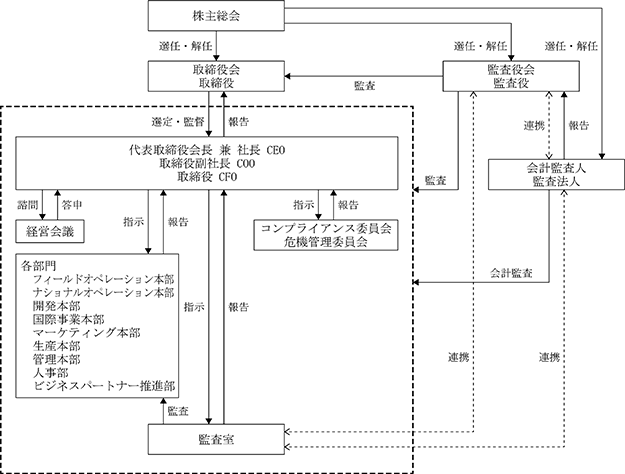

該当事項はありません。
該当事項はありません。
③ 【その他の新株予約権等の状況】
該当事項はありません。
該当事項はありません。
(注) ストックオプションの行使による増加であります。
2023年12月31日現在
(注) 自己株式8,717株は、「個人その他」に87単元及び「単元未満株式の状況」に17株を含めて記載しております。
2023年12月31日現在
2023年12月31日現在
(注) 「単元未満株式」の欄には、当社所有の自己株式17株が含まれております。
2023年12月31日現在
該当事項はありません。
該当事項はありません。
該当事項はありません。
(注) 当期間における保有自己株式には、2024年３月１日から有価証券報告書提出日までの単元未満株式の買取りによる株式数は含めておりません。
当社は、株主への利益還元を重視し、業績等を勘案しつつ安定した配当政策を実行して行きたいと考えております。
当社は、中間配当と期末配当の年２回の剰余金の配当を行うことを基本方針としており、中間配当については「取締役会の決議により、毎年６月30日を基準日として、中間配当を行うことが出来る。」旨を定款に定めております。従って、剰余金の配当の決定機関は、期末配当については株主総会、中間配当については取締役会であります。また、内部留保金につきましては、フランチャイズ店の店舗用設備の購入資金等として活用してまいります。このような基本方針に基づき、変化の激しい経済情勢や業績などを考慮し、株主各位のご期待に沿うよう努めてまいります。なお、期末配当につきましては、１株当たり20円の普通配当を2024年３月18日開催予定の第51回定時株主総会で決議する予定です。翌期の配当につきましては、中間配当20円、期末配当20円の年間40円を予定しております。
当事業年度の配当性向は33.4％、純資産配当率は3.2％となります。
なお、当事業年度に係る剰余金の配当は以下のとおりであります。
当社はサーティワンアイスクリームの永遠の企業理念である"We make people happy."「アイスクリームを通じて、人々に幸せをお届けします。」のもとに、安全・安心を第一としたより良い商品を通して、お客様に常に満足と感動を感じていただけるアイスクリーム専門店チェーンの本部を目指します。また、お客様やこのビジネスに関わる全ての人々に幸せをお届けすることが我々の使命であると考えております。
当社は、この企業理念を踏まえ、企業の継続的成長と、中長期的な企業価値を向上するとともにステークホルダーとの良好な関係を構築することを経営の最重要課題の一つとして、コーポレートガバナンスの充実に取り組んでまいります。
当社は、東証スタンダード市場上場会社としてコーポレートガバナンス・コード基本５原則の全てを実施しております。
当社は、監査役会設置会社であります。取締役会及び監査役会を中心としたコーポレート・ガバナンス体制を構築することで、取締役会の意思決定と取締役の業務執行を適正に監督及び監視しております。更に監督及び監視を強化するため、社外取締役及び社外監査役を選任しております。また監査役会、監査室及び監査法人の連携により、監査体制をより強化しております。
当社のコーポレート・ガバナンス体制の概要は以下の通りです。
（取締役会）
当社の取締役会は年６回乃至７回開催し、法令で定められた事項や経営に関する重要事項について討議と決議を行っております。
なお、当社の取締役は11名以内とし、株主総会での取締役の選任決議は、議決権を行使できる株主の議決権の３分の２以上を有する株主が出席し、その議決権の過半数をもって行う旨、及び、取締役の選任決議は累積投票によらない旨、並びに、取締役の解任決議は、議決権を行使することができる株主の議決権の過半数を有する株主が出席し、その議決権の３分の２以上をもって行う旨が定款に定められております。
現在取締役会は、代表取締役会長兼社長ＣＥＯ ジョン・キムを議長とした社内取締役３名、社外取締役６名で構成されております。
・取締役会構成員の氏名 等
議 長：代表取締役会長兼社長 ＣＥＯ ジョン・キム
構成員：取締役副社長 ＣＯＯ 安齊 正明
取締役 ＣＦＯ 白井 康平
取締役（社外） ジョン・バギース
取締役（社外） ピーター・ジャンセン
取締役（社外） 河村 宣行
取締役（社外） 恩田 友紀子
取締役（社外） セオドール・ガイルド
取締役（社外） 阿部 絵美麻
（監査役会）
当社監査役会は、当社の事業・経営体制に精通した常勤監査役１名と、法律、財務・会計などの専門分野に精通した社外監査役２名で構成し、監査役会で決定した監査方針、監査計画等に従い監査役活動を行い、取締役の職務執行や会社財産の状況等を監査し、経営の健全性の監査を実施しております。
また、四半期毎に監査法人による監査又は四半期レビュー結果報告会に出席し、経営課題等について審議し、原則として取締役会にも出席し、適宜意見を述べることで経営に関する適正な牽制機能を果たしております。
・監査役会構成員の氏名等
議 長：常勤監査役 肥沼 邦幸
構成員：監査役（社外） 髙橋 健一
監査役（社外） 川井 克之
（経営会議）
業務執行に関する取締役会付議事項を必要に応じて事前審議し、取締役会決議事項の具体的な業務執行方法の審議を行うとともに、稟議規程に基づく各種稟議案件及び経営陣に提案される業務企画提案事項の報告を受け、案件について審議・協議する機関として経営会議を設置し、議長である社長が決裁いたします。毎週定例で週初めに開催されるとともに、必要に応じて臨時に開催しております。
常勤取締役、役付執行役員で構成され、その他に指名された者を出席者とし、常勤監査役も経営会議に出席し、適宜意見を述べることで経営に関する適正な牽制機能を果たしております。
・経営会議構成員の氏名 等
議 長：代表取締役会長兼社長 ＣＥＯ ジョン・キム
構成員：取締役副社長 ＣＯＯ 安齊 正明
取締役 ＣＦＯ 白井 康平
常務執行役員 小沢 敏彦
常勤監査役 肥沼 邦幸
（内部監査）
監査室は、法令の遵守状況及び業務活動の効率性等について、当社各部門に対し内部監査を実施し、業務改善に向けた具体的助言・改善勧告を代表取締役社長へ報告しております。

ロ 企業統治の体制を採用する理由
当社は、迅速かつ実効性のあるコーポレート・ガバナンス体制の構築が重要であると考えております。
当社の事業規模等において、現行の体制が経営の健全性、公正性及び透明性を維持し、法令遵守、社内ルールの徹底、的確かつ迅速な意志決定、効率的な業務執行、監査機能の強化や全社的なコンプライアンス体制の強化を実現できるものと考えております。
イ 内部統制システムの整備状況
ⅰ) 取締役・使用人の職務の執行が法令及び定款に適合することを確保するための体制
2005年１月19日制定の当社「行動規範及び行動指針」をはじめとするコンプライアンス体制に係る規定を役員、従業員が法令・定款及び社会規範を遵守した行動をとるための行動規範とします。また、その徹底を図るため、各部門の長をコンプライアンス責任者とし、これら責任者で構成するコンプライアンス委員会を設置します。コンプライアンス委員会は社長を統括責任者とし、コンプライアンス体制の整備と問題点の把握に努め、その対策を具体化します。法令上疑義のある行為等について従業員が直接情報提供を行う手段として管理本部長及び顧問弁護士を窓口とするヘルプライン（内部通報制度）を設置・運営します。なお、公益通報者保護法の趣旨を踏まえ、従業員のヘルプラインへの情報提供を理由とした不利益な処遇は一切行わないものとします。
ⅱ) 取締役の職務の執行に係る情報の保存及び管理に関する体制
a 会社の重要な意思決定は、株主総会、取締役会、経営会議及び稟議によって行われ、その議事録及び稟議書は、法律及び「文書管理規程」に従い、所定の期間保存をします。
b 会社のその他の意思決定についても必ず文書化をするか、又は議事録を作成し、法令保存文書と同様に「文書管理規程」で定めた所定の期間保存します。定めの無い情報については、各部門、部署の管理責任者が保存の要否及び期間を定め対応することとします。
c 取締役及び監査役がこれらの議事録、稟議書及び各文書の閲覧を要請した場合は、速やかに閲覧できるように管理します。
ⅲ) 損失の危険の管理に関する規定その他の体制
全社的リスク管理規程を作成し、コンプライアンス、環境、災害、品質、情報セキュリティ等に係るリスクについて、それぞれの担当部門がリスクの洗い出しを行い、そのリスクの軽減等に取り組みます。総務部においては組織横断的リスク状況の監視及び全社的対応を行います。新たに生じたリスクについては社長が速やかに担当部門を定め対応します。
a リスクの発生及び行動規範に反する行為が認められたときは、部門長、管理本部長、監査室等、社内関連部門のいずれかに相談・報告します。
b 監査室は各種規程に沿った対応が行われているかを定期的に監査し、監査結果を社長に報告します。また、併せて経営会議にも報告を行います。
c 関連部門はコンプライアンス委員会に報告・協議の上、関係者への連絡・連携・対策については「全社的リスク管理規程」及び「危機管理マニュアル」に則り行います。
ⅳ) 取締役の職務の執行が効率的に行われることを確保するための体制
取締役会において長期経営計画を策定し、各年度毎の取締役、従業員が共有する全社的な目標を定め、この目標達成に向けて各部門が実施すべき具体的な計画を毎年１月のB-R31キックオフミーティング（政策発表会）で発表し、浸透を図ります。また、取締役会、経営会議等でその結果をレビューし、効率化を阻害する要因を排除・低減するなどの改善を促すことにより、目標達成の確度を高め、全社的な業務の効率化を図ります。
ⅴ）企業集団における業務の適正を確保するための体制
当社グループに属する子会社の状況を正確に把握して適切な管理を図ります。また、毎月、業績に関する計数の報告だけでなく、顧客・製品に関する定性的な報告を受けます。更に、必要に応じ、当社取締役をはじめ幹部社員が子会社に出向き、問題点の把握・解決に努めます。
ⅵ) 監査役の職務を補助すべき使用人
監査役は、監査室の職員に監査業務に必要な事項を命ずることができ、監査役より監査業務に必要な命令を受けた職員はその命令に関して取締役等の指揮命令を受けないものとし監査役の当該職員に対する指示が確実に実行されるようこれを確保します。また、当該職員の人事異動、人事評価等については、監査役と協議するものとします。
ⅶ) 監査役への報告体制及びその他監査役の監査が実効的に行われることを確保するための体制
取締役は、会社に著しい損害を及ぼすおそれのある事実があることを発見したときは、速やかに監査役に報告します。また取締役及び従業員は、法令違反、定款違反、不正行為等全社的に重大な影響を及ぼす事項並びに業務執行の状況及び結果について監査役に報告します。なお、従業員の監査役への情報提供を理由とした不利益な処遇は一切行わないものとします。
取締役は、監査役の職務の遂行にあたり監査役が必要と認めた場合に、顧問弁護士、監査法人等との連携を図れる環境を保障し、その費用は会社が負担するものとします。
ⅷ) 財務報告の信頼性を確保するための体制
当社グループは財務報告の信頼性確保及び、金融商品取引法に定める内部統制報告書の有効かつ適切な提出のため、内部統制システムの構築を行い、また、内部統制システムと金融商品取引法及びその他の関係法令との整合性を確保するために、その仕組みを継続的に評価し必要な是正を行います。
ⅸ) 反社会的勢力排除に向けた基本的な考え方とその整備状況
当社グループは社会の秩序や安全に脅威を与える反社会的勢力及び団体とは一切関係を持たず、さらに反社会的勢力及び団体からの要求を断固拒否し、これらと係わりのある企業、団体、個人とはいかなる取引も行わないとする方針を堅持します。当社は総務部において、情報の一元管理、警察などの外部機関や関連団体との信頼関係の構築及び連携に努めてきており、引き続き反社会的勢力排除のための社内体制の整備強化を図ります。
リスク管理体制につきましては、「全社的リスク管理規程」に基づきコンプライアンス、製品、情報、クレーム、災害等に係るリスクについて、各本部長を管理責任者として定め、事業活動から発生するリスクの把握・分析・評価を行い、その発生防止に努めております。
経営や企業価値に重大な影響を及ぼす事態が発生した場合には、社長を統括責任者とする「危機管理委員会」を招集し、迅速且つ適切な処置方法を決定し実施いたします。
当社と社外取締役セオドール・ガイルド氏、阿部絵美麻氏、及び社外監査役は、会社法第427条第１項の規定に基づき、同法第423条第１項の損害賠償責任を限定する契約を締結しております。
当該契約に基づく損害賠償責任の限度額は、会社法第425条第１項に規定する最低責任限度額としております。
ニ 役員等賠償責任保険契約の内容の概要
当社は、当社の取締役、監査役、執行役員を被保険者として、会社法第430条の３第１項に規定する役員等賠償責任保険（D&O保険）契約を保険会社との間で締結しております。これにより、被保険者がその業務の執行に関し責任を負うこと又は当該責任の追及に係る請求を受けることによって生ずることのある損害が填補されます。但し、故意または重過失に起因して生じた損害等は補償対象外とすることにより、役員等の職務の執行の適正性が損なわれないように措置を講じております。
ホ 補償契約の内容の概要
当社は、取締役ジョン・キム氏、安齊正明氏、白井康平氏、ジョン・バギース氏、ピーター・ジャンセン氏、河村宣行氏、恩田友紀子氏、セオドール・ガイルド氏、阿部絵美麻氏、及び監査役肥沼邦幸氏、髙橋健一氏、川井克之氏との間で、会社法第430条の２第１項に規定する補償契約を締結しており、同項第１号の費用及び同項第２号の損失を法令の定める範囲内において当社が補償することとしております。ただし、自己若しくは第三者の不正な利益を図る場合、情報提供、取締役会への報告を怠った、または遅延した場合、その職務を行うにつき悪意または重過失があったことにより損害賠償を請求された場合など、一定の免責事由を設けております。
当社は、機動的な資本政策の遂行を可能とするため、会社法第165条第２項の規定により、取締役会の決議によって自己の株式を取得することができる旨、定款に定めております。
当社は、機動的な利益還元を可能とするため、取締役会の決議によって、毎年６月30日を基準日として中間配当をすることができる旨、定款に定めております。
（注)取締役ＣＦＯ 白井 康平は2023年３月15日開催の第50回定時株主総会で選任され、同日に就任いたしましたので、就任以降に開催された取締役会への出席状況を記載しております。
取締役会における主な検討内容は、法令及び定款に定められた決議事項に加え、事業報告、決算に関する事項、中間配当に関する事項、重要投資案件の検討、予算の承認、新規商品販売に関する取り組み状況、新規プロモーションの進捗状況等であります。
役員報酬検討会議における主な検討内容は、取締役の基本報酬の個別報酬額を決定しております。
① 役員一覧
イ 2024年３月14日（有価証券報告書提出日）現在の当社の役員の状況は、以下のとおりであります。
男性
(注) １ 取締役 ジョン・バギース、ピーター・ジャンセン、河村宣行、恩田友紀子、セオドール・ガイルド及び阿部絵美麻は、社外取締役であります。
２ 監査役 髙橋健一及び川井克之は、社外監査役であります。
３ 取締役の任期は、2022年12月期に係る定時株主総会終結の時から2023年12月期に係る定時株主総会の終結の時までであります。
４ 監査役の任期は、2022年12月期に係る定時株主総会終結の時から2026年12月期に係る定時株主総会の終結の時までであります。
ロ 2024年３月18日開催予定の第51回定時株主総会の議案（決議事項）として、「取締役９名選任の件」「監査役１名選任の件」を提案しており、当該議案が承認可決されますと、当社の役員の状況は以下のとおりとなる予定です。なお、役員の役職等につきましては、当該定時株主総会の直後に開催が予定される取締役会の決議事項の内容（役職等）を含めて記載しております。
男性
(注) １ 取締役 パウロ A.P. ニコラス、ピーター・ジャンセン、河村宣行、恩田友紀子、セオドール・ガイルド及び阿部絵美麻は、社外取締役であります。
２ 監査役 川井克之及び萩森正彦は、社外監査役であります。
３ 取締役の任期は、2023年12月期に係る定時株主総会終結の時から2024年12月期に係る定時株主総会の終結の時までであります。
４ 監査役肥沼邦幸及び川井克之の任期は、2022年12月期に係る定時株主総会終結の時から2026年12月期に係る定時株主総会の終結の時までであります。
５ 監査役萩森正彦の任期は、2023年12月期に係る定時株主総会終結の時から2027年12月期に係る定時株主総会の終結の時までであります。
当社は、社外取締役６名と社外監査役２名がおります。当該社外取締役及び社外監査役との人的関係、資本的関係又は取引関係その他の利害関係はありません。
社外取締役、ジョン・バギース氏は、世界規模で展開するインスパイア ブランズのインターナショナル部門の最高執行責任者としてグローバルな視点で当社事業の全般に助言及び提言を行っております。ピーター・ジャンセン氏は、インスパイア ブランズの国際規模で展開する物流部門の責任者としてグローバルな視点から当社事業の全般に助言及び提言を行っております。河村宣行氏は、株式会社不二家で長年、幅広い分野を担当しており、2019年３月からは株式会社不二家の代表取締役社長を務めております。その間に得た豊富な知識、経験を活かして当社の事業全般に有益な助言及び提言を行っております。恩田友紀子氏は、2019年３月より株式会社ダロワイヨジャポンの取締役社長、2021年３月からは代表取締役社長を務めております。その間に得た豊富な知識、経験を活かして当社の事業全般に有益な助言及び提言を行っております。セオドール・ガイルド氏は、世界規模で展開するマッキンゼー・アンド・カンパニーでマーケティングをはじめ幅広い分野を担当しており、他社の社外取締役としての経験も有しております。その間に得た豊富な知識、経験を活かして、グローバルな視点で当社の事業全般に有益な助言及び提言を行っております。阿部絵美麻氏は、弁護士としての専門的な知識・経験等を活かしていただくことにより、当社の取締役の業務執行について客観的な立場から監督するとともに、経営全般に関する助言及び提言を行っております。
社外監査役、髙橋健一氏は公認会計士及び税理士として豊富な経験に基づき専門的見地から助言及び提言を行っております。川井克之氏は公認会計士として豊富な経験に基づき専門的見地から助言及び提言を行っております。
当社は、社外取締役又は社外監査役を選任するための独立性に関する基準又は方針として明確に定めたものはありませんが、選任にあたっては、東京証券取引所が定める独立性基準を基本に、経歴や当社との関係を踏まえて、社外役員としての職務を遂行できる十分な独立性が確保できることを個別に判断しております。
ニ 社外取締役又は社外監査役による監督又は監査と内部監査、監査役監査及び会計監査との相互連携並びに内部統制部門との関係
社外取締役は、取締役会に出席し必要に応じて独立した視点からの有益な意見を述べ、経営全般に対する監督を行うとともに、役員・管理職従業員とコミュニケーションを取り情報収集に努め、経営上の監理・監督・助言を行っております。
社外監査役は、常勤監査役とともに監査役会を組織し、取締役の業務執行を適正に監督及び監視しております。具体的に取締役会へ出席して審議に参加し、必要に応じて意見を述べるほか、常勤監査役と会計監査人との定期的な会合に出席して、監査役間の連携を図り意見交換・情報共有を行っております。
なお当社は、取締役会の審議を活性化するために、取締役会出席者に対して取締役会資料の事前配布を行い、事前に検討する時間を確保できるよう努めております。
(3) 【監査の状況】
当社における監査役会は、常勤監査役(１名)及び社外監査役(２名)の計３名の体制で構成されております。
監査役監査は、事業年度ごとに設定される監査方針及び監査計画に基づいて実施されており、取締役会の意思決定と取締役の業務執行を適正に監督及び監視しております。具体的には、監査役は取締役会、経営会議等の重要な会議に出席する他、取締役、従業員等からの報告聴取、重要な決裁書類の閲覧などのほか、重要な事業所への往査等を行っております。また、定期的に監査役会を開催するとともに、会計監査人とも意見交換を行い連携を図ることで、法令、定款違反や株主利益を侵害する事実の有無等について適正な監査を行っております。
なお、常勤監査役の肥沼邦幸氏は長年にわたり当社経理部、経営管理部に在籍し、決算業務及び財務諸表の作成等に従事し、また、2022年２月からは、一般社団法人miraieの監事として設立当初から携わり、その豊富な経験と幅広い見識を活かし、2023年３月に当社常勤監査役に就任しております。
社外監査役、髙橋健一氏は直接企業経営に関与した経験はありませんが、永年にわたり公認会計士の職務に携わり、公認会計士及び税理士の資格と豊富な経験を有し、1997年３月に当社社外監査役に就任しています。
また、社外監査役、川井克之氏は直接企業経営に関与した経験はありませんが、長年にわたり公認会計士の職務に携わり、公認会計士の資格と豊富な経験を有し、財務及び会計に関する相当程度の知見を有しており、2023年３月に当社社外監査役に就任しております。
監査役会は、年６回定期開催する他、必要に応じて開催致します。当事業年度の開催回数は６回で、個々の監査役の出席状況については以下のとおりであります。
(注) １．常勤監査役 遠山一彌氏及び、社外監査役 山田幸太郎氏は、2023年３月15日開催の第50回定時株主総会の終結の時をもって退任しております。
２．常勤監査役 肥沼邦幸氏及び、社外監査役 川井克之氏の監査役会出席状況は、就任した2023年３月15日以降に開催された監査役会を対象としております。
監査役会における具体的な検討事項としては、財務状況の監査・債権の回収状況の確認及び助言・会計監査人の監査状況及び結果の評価、内部統制システムの整備・運用状況、主要な固定資産投資の監査を行っております。
また、常勤の監査役の活動としては、取締役会及び経営会議へ参加し独立した立場からの提言、稟議書・各主要会議の議事録の閲覧、実地棚卸の立会・新規店舗への巡回を通じて、会社の状況を把握し、経営の健全性を監査し、他の社外監査役と情報を共有することにより監査機能の充実を図っております。
② 内部監査の状況
内部監査部門は、社長直轄の組織として監査室(2023年12月現在で人員１名)を設置しております。監査室は社長の承認を受けた内部監査計画に基づき、当社の業務活動が法令や社内規程、経営計画等に準拠して実施されているか、効果的かつ効率的に行われているか等について調査・確認し、内部監査報告書を作成、経営会議にて社長及び役員並びに常勤監査役に報告し、必要に応じて助言・改善勧告を行っております。また、監査室は、社長の承認を得た内部監査計画を常勤監査役に報告しております。
財務報告に係る内部統制の整備及び運用状況の評価については、定期的に監査の進捗状況や評価結果を共有する監査報告会を実施しており、社長を含む常勤取締役と監査役、監査室、会計監査人が出席し、相互に意見交換するなど監査の実効性確保に努めております。
監査室と監査役の間では、定期的に内部監査結果及び指摘・提言事項等につき、相互に意見交換するなど、密接な情報交換・連携を図っております。また、監査室は、会計監査人とも定期的会合を持ち、情報交換を行うなど連携を図っております。
監査室は、監査役及び会計監査人と調整を行い、監査体制の整備に取り組むとともに、監査業務の効率性と質の向上を図っております。
監査役、会計監査人、監査室による監査の結果は、適時適切に社長及び役員へ報告され、意思決定に十分考慮されるとともに、経営の改善に活かされております。
イ 監査法人の名称
PwC Japan有限責任監査法人
(注)2023年12月１日付けでPwCあらた有限責任監査法人とPwC京都監査法人との合併により名称変更しております。
ロ 継続監査期間
36年間
当社は、2006年12月期以降、継続してPwC Japan有限責任監査法人による監査を受けております。
なお、当社は、少なくとも1988年12月期から2005年12月期まで継続して旧青山監査法人並びに旧中央青山監査法人による監査を受けておりました。
また、1987年12月期以前については調査が著しく困難であったため、継続監査期間はこの期間を超える可能性があります。
ハ 業務を執行した公認会計士
五代 英紀
島袋 信一
ニ 監査業務に係る補助人の構成
当社の会計監査に係る補助者は、公認会計士５名、その他（公認会計士試験合格者等）19名であります。
ホ 監査公認会計士等の選定方針と理由
当社は、会計監査人の選定にあたっては、独立性及び専門性、品質管理体制、監査報酬等を総合的に勘案して決定することとしております。上記要素について検討の結果、適任と判断したためであります。
チ 監査役及び監査役会による会計監査人の評価
当社の監査役及び監査役会は、毎期会計監査人の評価を行っております。監査役会の定める評価基準に基づき、独立性、品質管理の状況、監査報酬、監査役や経営者等のコミュニケーション等の基準項目について検討し、総合的に評価しております。
イ 監査公認会計士等に対する報酬の内容
(注) 前連結会計年度及び当連結会計年度の非監査業務に基づく報酬は、当社の監査公認会計士等と同一のネットワークファームに属しているプライスウォーターハウスクーパースのメンバーファームによる税務に関する指導・助言業務等に対するものであります。
該当事項はありません。
該当事項はありませんが、監査内容及び監査日数等を勘案した上で決定しております。
ホ 監査役会が会計監査人の報酬等に同意した理由
当社の監査役会は、会計監査人の監査計画の内容、会計監査の職務遂行状況及び報酬見積りの算出根拠、必要とされる監査日数、他社の状況や当社の事業規模・事業内容について吟味・検証を行った結果、妥当な水準であると判断し、会計監査人の報酬等の額について同意しております。
(4) 【役員の報酬等】
イ 役員の報酬等の額又はその算定方法の決定に関する方針
当社は取締役会において、取締役の個人別の報酬等の額又はその算出方法の決定に関する方針を決議しております。
当社の取締役及び監査役の報酬等については、「基本報酬」、「業績連動報酬」、「退職慰労金」で構成されています。取締役の「基本報酬」は、常勤取締役及び常勤監査役で構成される役員報酬検討会議にて諮られ、経営内容、経済情勢、従業員給与とのバランス等を勘案し、株主総会決議の範囲内で個々の職責、業績貢献度を考慮して個別の額を決定するものとしており、当事業年度の報酬額についても2023年３月16日開催の同検討会議において、前事業年度の業績、経営環境等を勘案の上、決定がなされました。監査役の「基本報酬」については、職務の内容等を勘案し、監査役の協議により決定しております。取締役会は、当事業年度に係る取締役の個人別の報酬等の内容は、株主総会で承認された限度額内であり、役員報酬検討会議において取締役の個人別の報酬等の額又はその算定方法の決定に関する方針に沿って決定されたものであることから、決定方針に沿うものであると判断しております。
「業績連動報酬」は現金賞与であり、各事業年度の業績及び年度経営計画の達成状況を総合的に勘案した上で、株主総会で決議いただくこととしております。当事業年度については、78,800千円を役員賞与の総額とすること、個別の支給額の決定は取締役会に一任することを、2024年３月18日開催予定の第51回定時株主総会において決議する予定です。
役員賞与は業績に連動させることが望ましいとの考えのもと、経営目標として掲げる自己資本利益率に関連性が高いことなどを総合的に勘案して、税金等調整前当期純利益の経営計画に対する達成状況を役員賞与額決定の指標としております。当事業年度の税金等調整前当期純利益は、1,839,442千円でありました。また、業績連動報酬と業績連動報酬以外の報酬等の支給割合の決定方針は定めておりません。
役員退職慰労金は、当社規程に基づき、株主総会の決議を経て支給することとしております。
ロ 役員の報酬等についての株主総会の決議による定めに関する事項
取締役の基本報酬については、2020年３月13日に開催された第47回定時株主総会において年額２億円以内（うち社外取締役分50百万円以内とし、当該株主総会終結時の員数は７名（うち社外取締役３名）であります。）と決議しております。但し、業績連動報酬は本限度額には含まれておりません。
監査役の基本報酬については、2020年３月13日に開催された第47回定時株主総会において年額50百万円以内（当該株主総会終結時の員数は３名であります。）と決議しております。
(注) １ 上記報酬の他に、非金銭報酬であるフリンジ・ベネフィットとして住宅手当の費用4,680千円を当社が負担しています。
２ 業績連動報酬78,800千円については、2024年３月18日開催予定の定時株主総会の決議事項となっております。
報酬等の総額が１億円以上である者が存在しないため、記載を省略しております。
(5) 【株式の保有状況】
純投資目的である投資株式とは、株式の配当や値上がり益を得ることを目的として保有する株式を意図し、純投資目的以外の目的である株式とは、発行会社との関係性から事業上の何らかの便益を目的として保有する株式と位置付けております。当社では、純投資目的の投資は行わず、純投資目的以外の目的である投資株式のみを保有する方針としております。
当社は発行会社との関係性において、中長期的な関係維持のための取引先への出資など、当該株式を保有する高度の合理性があると判断する場合に限り他社株式を保有します。
保有株式については、株式取得時の投資目的や直近の事業戦略等との整合性、株式保有による便益やリスクといった観点から、経営会議で保有の合理性を検証しています。上記検証の結果、保有の合理性が乏しいと判断した場合には、株式の売却を検討いたします。
保有株式については、個別銘柄ごとに中長期的な関係維持の保有目的に沿った便益が得られているか、経営会議にて慎重に審議した結果、保有する高度の合理性があると判断いたしました。
該当事項はありません。
特定投資株式
(注) 定量的な保有効果については記載が困難であります。保有の合理性は、「株式の保有状況」②イに記載の通りであります。
みなし保有株式
該当事項はありません。
該当事項はありません。
該当事項はありません。
該当事項はありません。